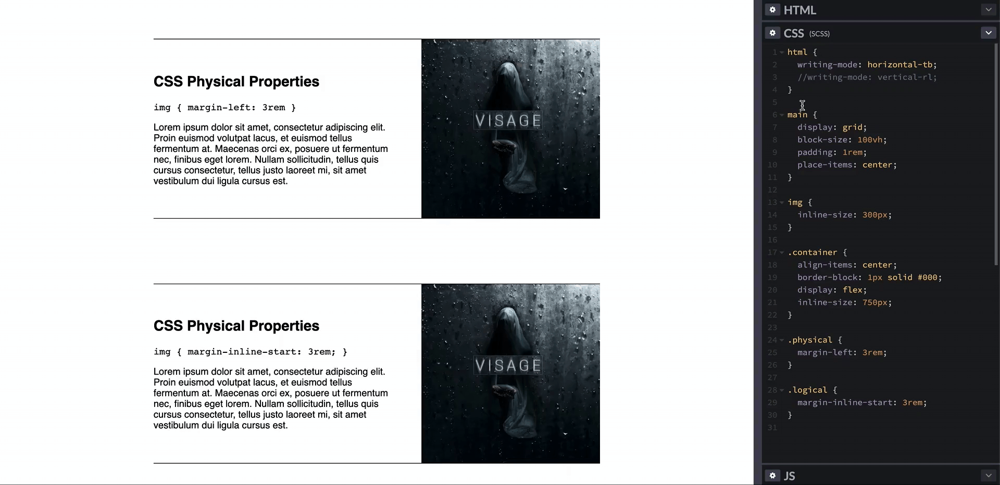
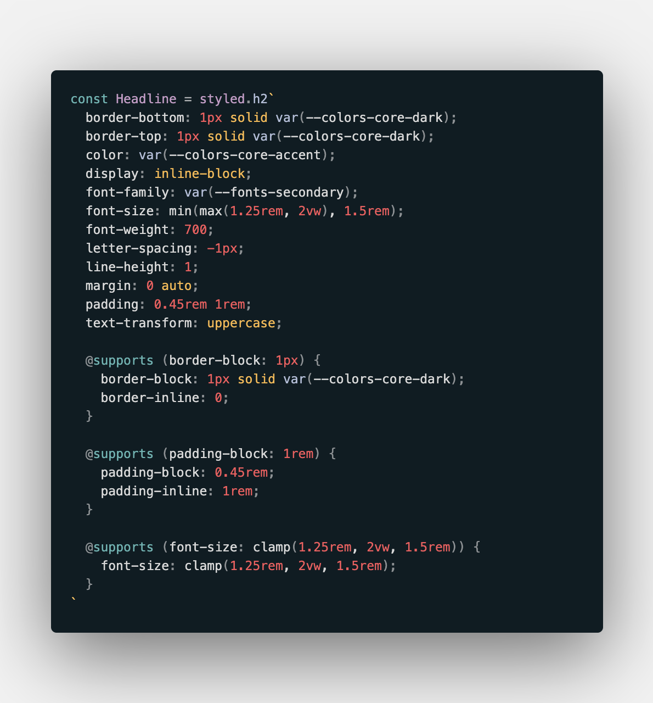

CSS Logical Properties Are the Future of the Web & I18N
I can't remember how many years ago it was, but during my first interview for a Frontend position, I was asked to sketch out the CSS box model. I outlined the margins, borders, and padding and even denoted each side with its physical description–left, right, top and bottom.
I had committed that model to memory, and have never really reconsidered it since. It never occurred to me that something so fundamental could change. Yet here I am, writing an article to tell you that it, in fact, has.
Enter Logical Properties
Properties like top and left are physical in nature. They describe the specific side of an element, and stay attached to that physical location no matter how that element may render. Whereas, logical properties describe locations of an element based on the content flow, like start and end.
Why is this important?
If we're going to adjust our fundamental approach to writing and visualizing CSS, it's fair to ask why.
The web has firmly shifted into an expectation of responsive, user-friendly sites and products. That fluidity has allowed the platform to scale at tremendous rates, and has fully altered entire markets and industries.
But in the pursuit of supporting more and more devices, what happens if one of those devices isn't in English? Or French? Or any other language that flows from top to bottom, left to right?
Building inclusive products doesn't mean supporting devices, but supporting the people using them.
Looking at Hebrew specifically, a language written and read from right to left, there're plenty of styling challenges in handling this minor variation. Instances of text-align: left would need to be conditionally updated to text-align: right or an entirely separate set of styles is loaded, essentially creating a second unique version of the site or product.
What happens then with Japanese, where text flows from top to bottom, and content from right to left? Or Mongolian where the text flows the same, but the content is flipped to flow left to right?
Previously, elements were positioned with CSS physically into place where content would start or end with properties like bottom, left, right, and top. Then depending on the specific use case or situation, like Hebrew, reposition everything again.
This is where CSS Logical Properties shine. When writing text-align: left, it's likely because the text should be positioned where the content is expected to start. Only, as mentioned, content doesn't always start at the left. So what would be ideal is something like text-align: start to ensure our content is aligned with its expected starting point.
And that's exactly what CSS Logical Properties do.
Logical Approach
We're likely familiar with how the web is broken into two main axes– X and Y. While this hasn't changed, the naming conventions have.
The horizontal, X-axis becomes the inline-axis, while the vertical, Y-axis becomes the block-axis. But before breaking down individual property comparisons, let's dig a little deeper into understanding the inline and block axes and how they relate to this shift to logical properties.
Logical Axes
The inline and block axes determine the content and document flow of a page. Each axis, though, and their corresponding flow, can be set using two CSS properties - direction and writing-mode.
Inline Axis (direction)
The direction property affects the inline axis. This property can be used to set the flow (or direction) of text, columns, and horizontal overflow from left to right or, like in the case of Arabic or Hebrew, right to left.
direction: rtl | ltr;Block Axis (writing-mode)
The writing-mode property affects the block axis. This property can be used to set the flow of block-level containers either horizontally or, like in the case of Japanese, vertically.
writing-mode: horizontal-tb | vertical-lr | vertical-rl;The three keyword values shown here represent:
- horizontal-tb: Horizontal, top to bottom
- vertical-lr: Vertical, left to right
- vertical-rl: Vertical, right to left
What happens to the axes when direction or writing-mode are set?
Logical properties will replace styles like text-align: left with text-align: start. This is because, when defining the direction property, the start and end points of the inline axis are set.
In Latin languages, setting direction: ltr will define the start of the inline axis to the left. Whereas, in a language like Hebrew, direction: rtl will define the start of the inline axis to the right.
Aligning content with text-align: start will align the text to the start of the inline axis, relative to its direction value.

The block axis is where changes to the page can become dramatic. It's one thing to define the direction of the content flow, but another to define the flow of block content and containers with writing-mode.
For this, maybe it'll help to show the graphic first.

Notice in the graphic, when rotating the block axis into a vertical position with writing-mode, the inline axis rotates with it. This is what Flexbox has been teaching us all these years when changing its direction between row and column. When changing the writing-mode from horizontal to vertical, both axes rotate.
Little did I know, Flexbox and Grid had been preparing us for this logical approach for years.
This is where logical properties and values come into play.
If an image has a margin-left value creating distance between it and some text while the writing-mode is in a horizontal state, what happens to that margin when the writing-mode shifts to vertical? The vertical flow will place the text above the image, while the image's margin is still on its left.
The image doesn't need a margin on its left side, but a margin at the start of its inline axis.

Logical properties are aligned relative to the start and `end points of their respective axis, regardless of how those axes flow.

CSS Logical Properties require a shift in how elements are seen, both visually and mentally. An element will no longer have a width value, but an inline-size value, defining its size along the inline axis. No longer a height value, but block-size. And text will no longer be aligned with physical values like left and right but with logical values like start and end.
Physical → Logical Examples
border/margin/padding-left→border/margin/padding-inline-startborder/margin/padding-right→border/margin/padding-inline-endborder/margin/padding-top→border/margin/padding-block-startborder/margin/padding-bottom→border/margin/padding-block-end(min/max-)height→(min/max-)block-size(min/max-)width→(min/max-)inline-sizetop/bottom→inset-blockleft/right→inset-inline
Getting Started with Logical Properties
After coming across logical properties, I was excited to use them in a practical setting–something more than exploratory tinkering in CodePen. So, despite having no intention on translating my personal website to any other language, I set out to refactor it with logical properties.

Support & Scope
As with everything, browser support must be considered before implementing any change, much less something that overhauls just about everything.
While some logical properties have decent support like inline- and block-size, each property seems to be supported in different environments. So I went the route of writing a bunch of @supports queries.


All the queries add to the amount of code, for sure. However, for my personal project like this, I don't mind the trade off.
Gotchas
Property Support
Not every property has a logical equivalent or support yet. For example, clip-path and linear gradient values are not able to be defined with logical values. The former can be seen in the image of my personal site's header.
Conflicting Approaches
Additionally, using logical properties doesn't overwrite physical ones. Let's look at an element with padding and an absolute position.

What I had originally expected was for the margin-block/inline and border-block-start values to overwrite their physical equivalents of margin and border-top. However, they did not.
In this case, the element rendered styles for margin, border-top, border-block-start, and margin-block/inline. This obviously created alignment issues in the UI as the writing-mode changed and styles clashed.
To avoid this, I, again, turned to supports queries, but this time with the not keyword.

Is this getting to be a lot of CSS to write? Sure. And again, probably not an ideal approach at this time for professional products with multiple developers having to read this. However, for the use case of my own site, and to experiment with the features, I'm comfortable with it.
By using supports and supports not physical and logical properties can be rendered without conflicting with each other.
Shorthand
When writing my styles, I tend to include frequent shorthanded properties, especially margin and `padding.

In this example, this style would apply a padding to all four sides of the element. But how does CSS know if those are physical or logical values? It doesn't. As of now, it would render with physical properties.
The approach with logical properties would be to specify a value for both ends of both axes.

Now, just because the traditional `padding shorthand doesn't work with logical properties yet, doesn't mean there aren't some logical shorthand alternatives already.

Using the shorthand properties of padding-block and padding-inline, values for the start and end positions for each can be defined in a single property for each axis.
Recap
As the web evolves and the expectations for inclusive products become more broad, the shift from physical layouts to logical ones will be a requirement.
No longer will the spacing on the left side of an image matter, but the spacing preceding it along its axis will, because left is not always the same thing to everybody.
I never thought such a fundamental piece of web development could change, but I was wrong, and I'm so excited that I was.